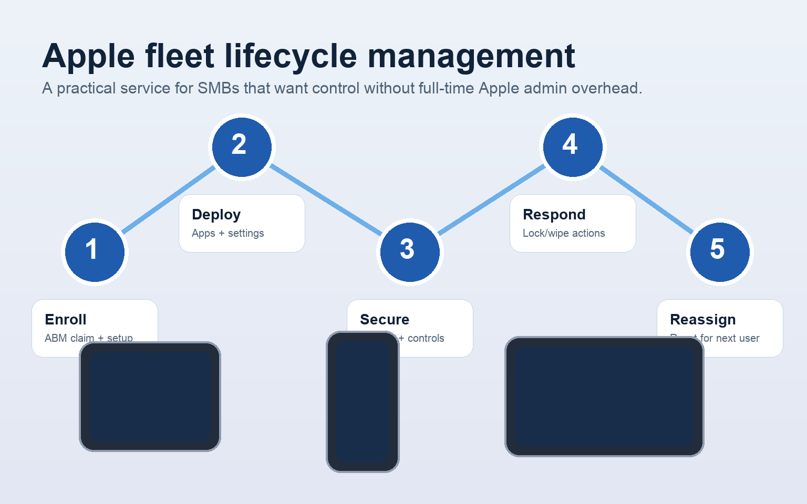

If your team uses Macs, iPhones, or iPads, Apple Business Manager and MDM can turn messy manual setup into a repeatable business process. KeyMSP designs, enrolls, secures, and manages Apple fleets so devices arrive ready to work and stay company-controlled over time.
Many SMBs buy Apple devices one at a time, hand them to employees, and hope policies stick. That works, until the team grows or someone leaves.
Think of Apple Business Manager as the ownership and enrollment layer, and MDM as the control layer. Together, they let your business claim devices, provision them consistently, and keep them aligned with policy after they are deployed.
New Apple devices can be tied to your business and automatically enrolled into management during setup.
Push approved applications, remove unwanted ones where supported, and standardize what employees see on day one.
Enforce passcode requirements, device settings, company accounts, and business restrictions from one system.

Apple Business Manager setup, reseller/device enrollment alignment, and MDM foundation design.
Baseline security, restrictions, app catalogs, naming standards, and role-based device profiles.
New device rollout, reassignments, offboarding actions, lost-device response, and policy updates.
We help keep provisioning efficient while reducing admin burden on leadership and internal staff.
The MacBook or iPhone can arrive pre-enrolled, with the right apps and settings already assigned.
Need a password manager, line-of-business app, or VPN everywhere? Push it consistently instead of handling one-offs.
Respond quickly with lock, wipe, status review, and documented business handling steps.
Offboarding gets cleaner when devices remain associated with the business and can be reset for reuse.
Law firms, accounting teams, consultants, and agencies that need a polished employee experience with business control.
Organizations shipping devices to remote or hybrid employees who need predictable setup without onsite IT.
Companies that are beyond ad hoc setup, but not large enough to justify a dedicated Apple admin in-house.
This is where the margin is. The setup project gets the foundation in place, but the recurring value comes from ongoing fleet operations, policy changes, app management, offboarding, and business accountability.
Ideal for getting Apple Business Manager, enrollment, and initial MDM structure set up correctly.
For businesses that want KeyMSP to actively run enrollment, app deployment, policy changes, and lifecycle operations.
Expand into stronger control, compliance, support, or security where the client needs more maturity.
No. This is often most valuable for SMBs because they feel the pain of inconsistent provisioning earlier, but usually do not have a dedicated Apple admin.
Yes. The point is to create a consistent business process across Apple device types, not treat each one as a separate fire drill.
Yes, within the capabilities of the chosen MDM platform and device ownership model. We can help standardize approved apps and restrictions around business-owned devices.
No, although new purchases are the easiest time to build a clean enrollment path. Existing fleets can often be brought under management as part of a structured project.
KeyMSP can design the enrollment path, configure the management stack, and run the ongoing operational work so your Apple environment stays clean, secure, and supportable.